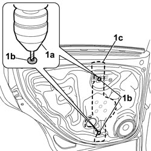

7010M27 ELECTRIC WINDOW MECHANISM FOR ONE REAR DOOR LH OR RH - R.R. WITH SUPPORT FRAME REMOVED
- Path
- Procedures > 70 FITTINGS > 7010 PASSENGER COMPARTMENT REAR SIDE DOORS > 7010M REAR SIDE DOOR ELECTRIC WINDOWS > 7010M27 ELECTRIC WINDOW MECHANISM FOR ONE REAR DOOR LH OR RH - R.R. WITH SUPPORT FRAME REMOVED
- Kind
- repair procedure (removal / refitting; the operation number is the code)
- Applies to
- all engines; all production periods
- Interactive page
- https://sloeber94.github.io/elrnDB-fCrm/en/#/194000933
Applies to: all engines; all production periods
 Removing
Removing
 Refitting
Refitting1. Using a drill (1a), remove the rivets (1b) securing the electric window opening mechanism (1c).

Applies to: all engines; all production periods
Refitting
Removing- Check that the electric window opening mechanism is not damaged.
- Place the electric window opening mechanism in the support frame and secure it using new rivets.